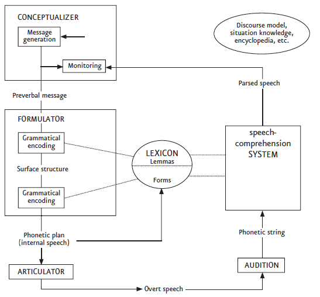

Sitzung 1: Einführung
eva.scheel-huber@uni-koeln.de
Was wünschen Sie sich für eine angenehme und produktive Zusammenarbeit?
Leistungsnachweis A
Leistungsnachweis B
Mit was beschäftigen wir uns in der Psycholinguistik?
Dietrich and Gerwien (2017)
Was sind die Komponenten des sprachlichen Wissens?
Was sind mögliche Prozeduren, Mechanismen?
Dietrich and Gerwien (2017)
Sprachfähigkeit: Wechselwirkung zwischen Sprachwissen und Sprachvorgängen
Dietrich and Gerwien (2017)
Wie wird das sprachliche Wissen und die Sprachvorgänge erworben? Wie entwickeln sie sich?
Beispiele?
Was sind die kognitive Prozesse die der Sprachproduktion unterliegen?

Levelt’s model of speech production Levelt (1989), adaptiert von Ruiter (1998)
Was sind die kognitive Prozesse die der Sprachproduktion unterliegen?
Levelt’s model of speech production Levelt (1989), adaptiert von Ruiter (1998)
Was fehlt hier?
Wie funktioniert das Sprachverstehen?
Inkrementalität
Mit was beschäftigen wir uns in der Psycholinguistik?
kognitive Vorgänge und Zustände des sprachlichen Wissens
Spracherwerb
Sprachproduktion
Sprachverstehen
Sprachstörungen
Dietrich and Gerwien (2017)